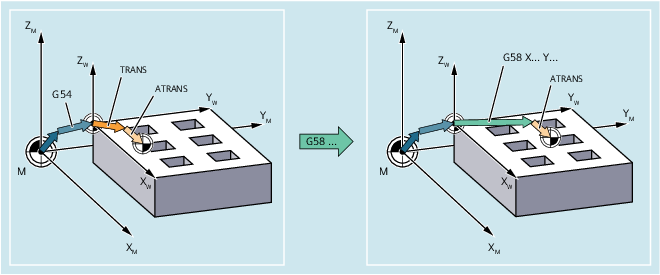
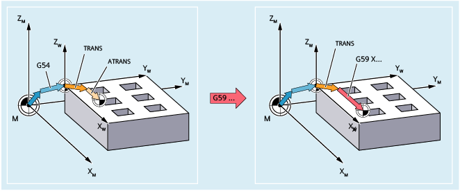

Mit den Befehlen G58 und G59 kann der absolute bzw. additive Translationsanteil der programmierbaren Nullpunktverschiebung (TRANS/ATRANS) achsspezifisch ersetzt werden.
G58 ersetzt den absoluten Translationsanteil (Grobverschiebung) der programmierten Nullpunktverschiebung für die angegebene Achse, die additiv programmierte Nullpunktverschiebung bleibt erhalten:
G59 ersetzt den additiven Translationsanteil (Feinverschiebung) der programmierten Nullpunktverschiebung für die angegebene Achse, die absolut programmierte Nullpunktverschiebung bleibt erhalten:
G58 und G59 sind nur anwendbar, wenn die Feinverschiebung projektiert ist (MD24000 $MC_FRAME_ADD_COMPONENTS = 1).
| Ersetzt den absoluten Translationsanteil der programmierbaren Nullpunktverschiebung für die angegebene Achse | |
Bezugspunkt: | Nullpunkt des aktuellen mit G54 ... G57, G505 ... G599 eingestellten Werkstückkoordinatensystems (ENS) | |
Alleine im Satz: | Ja | |
| Ersetzt den additiven Translationsanteil der programmierbaren Nullpunktverschiebung für die angegebene Achse | |
Bezugspunkt: | Nullpunkt des über TRANS zuletzt programmierten Werkstückkoordinatensystems | |
Alleine im Satz: | Ja | |
| Verschiebungswerte in Richtung der angegebenen Geometrieachsen (Bahn-, Synchron- und Positionierachsen) Beispielhaft soll folgende Festlegung gelten:
| |
| Programmcode | Kommentar |
|---|---|
| ... | |
| N50 TRANS X10 Y10 | ; Absoluter Translationsanteil: X10 Y10 Z0 |
| N60 ATRANS X5 | ; Additiver Translationsanteil: X5 Y0 Z0; → Gesamtverschiebung: X15 Y10 Z0 |
| N70 G58 X20 Y20 | ; Absoluter Translationsanteil: X20 Y20 Z0; → Gesamtverschiebung X25 Y20 Z0 |
| N80 G59 X10 | ; Additiver Translationsanteil: X10 Y0 Z0; → Gesamtverschiebung X30 Y20 Z0 |
| ... |
Siehe auch:
Programmierbare Nullpunktverschiebung (G58, G59): Weitere Informationen
Programmierbare Frames (Übersicht)